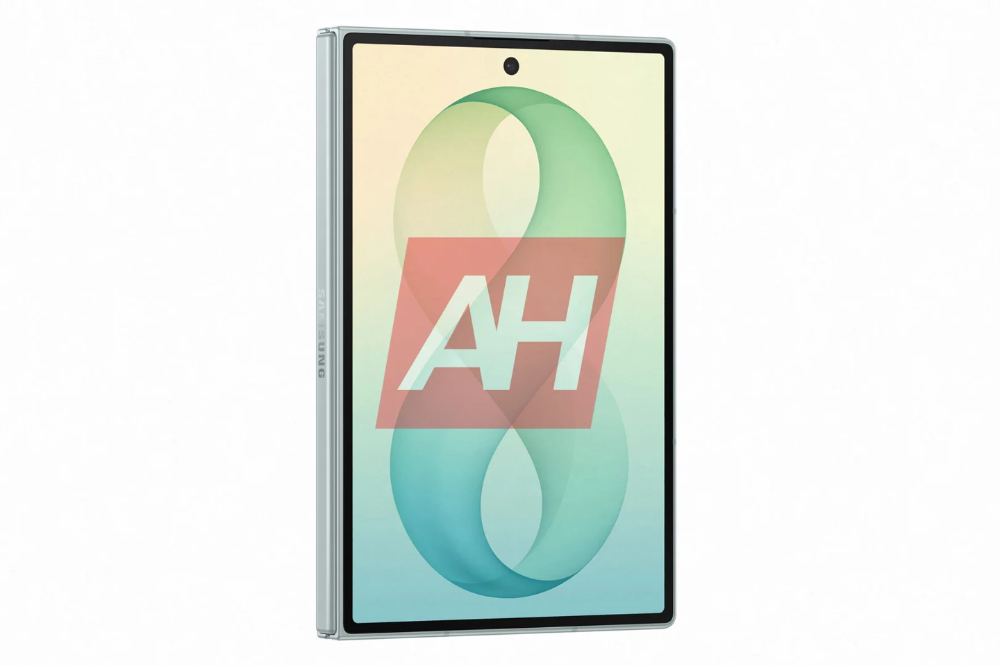
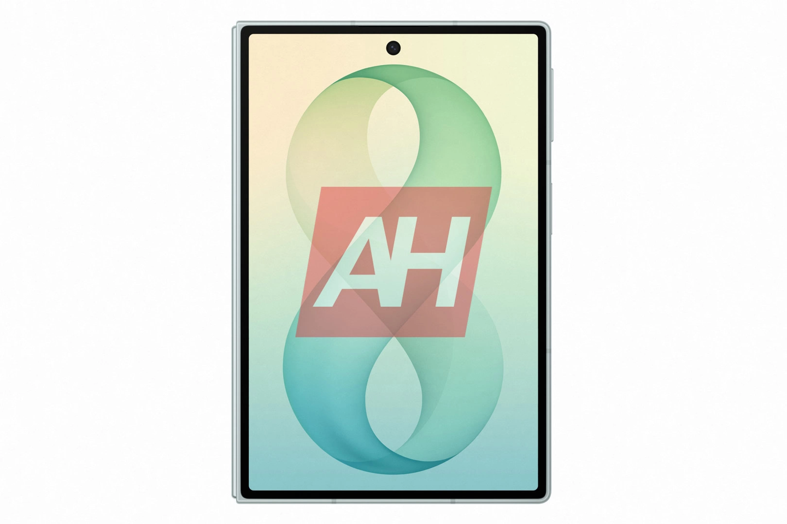
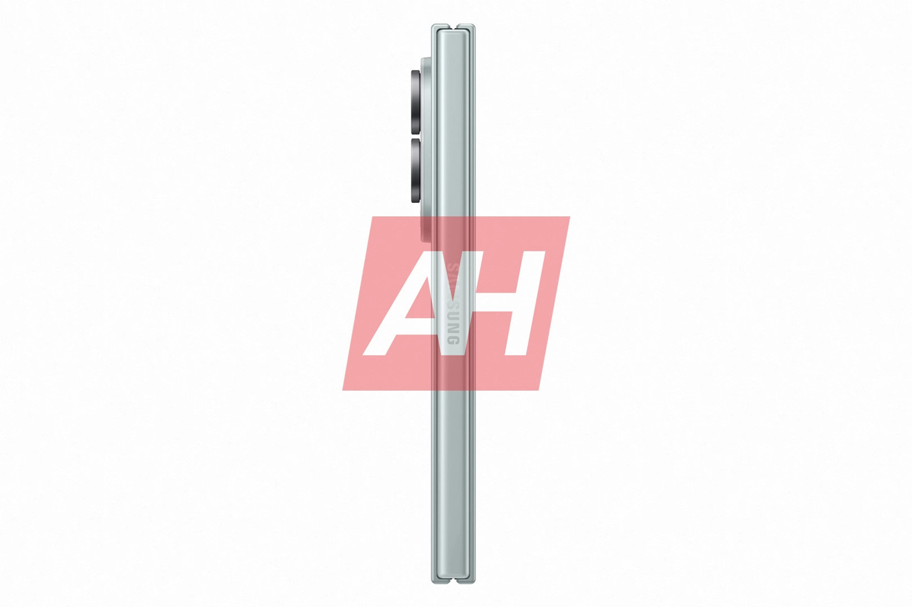
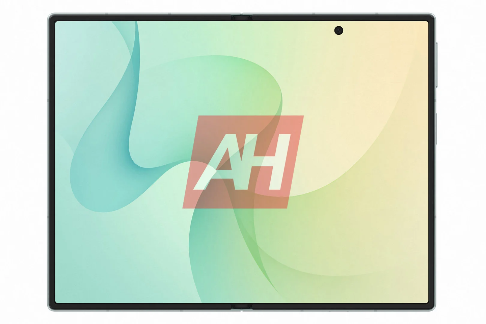
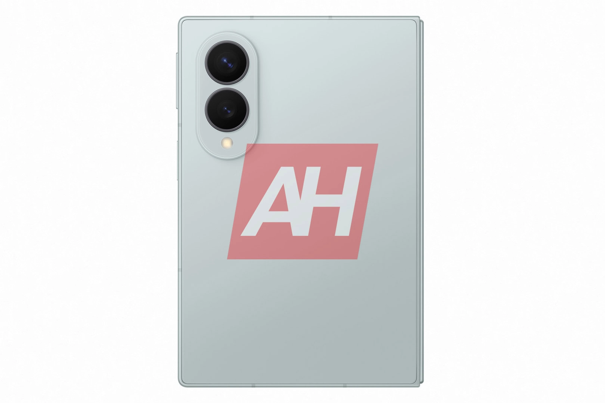

디자인 및 색상
기술 매체 AndroidHeadline은 Samsung Galaxy Z Fold8의 온라인 전용 색상인 피스타치오(Pistachio) 그린 버전의 렌더링 이미지를 공개했습니다.
이 색상은 연한 파란색과 회색 사이의 중간 톤으로, Samsung 공식 스토어에서만 독점 판매되는 온라인 전용 색상입니다. 해당 매체는 많은 이들이 이 색상에 관심을 보이고 있으며, 전체적으로 과하지 않으면서도 매우 아름다우며 비 오기 직전의 구름을 연상시킨다고 설명했습니다.
출시 정보
Samsung Galaxy Z Fold8은 2026년 7월 22일에 열리는 Samsung의 두 번째 Unpacked 신제품 발표회에서 정식으로 공개될 예정입니다. 이때 Galaxy Z Flip8, Galaxy Z Fold8 Ultra, Galaxy Watch 9 및 Galaxy Watch Ultra 2 등의 제품도 함께 출시됩니다.
기본 사양
공개된 정보에 따른 기기의 주요 하드웨어 사양은 다음과 같습니다.
- 두께: 펼쳤을 때 약 4.5mm, 접었을 때 약 9mm~9.7mm
- 무게: 약 201g
- 디스플레이 크기: 내부 7.6인치 또는 8인치, 외부 5.5인치 또는 6.5인치
성능 및 배터리
핵심 구성 요소에 대한 예상 사양은 다음과 같습니다.
- 프로세서: Qualcomm Snapdragon 8 Elite Gen 5 for Galaxy 또는 Samsung 맞춤형 3nm 공정 기반 Snapdragon 8 Elite Gen 5
- 메모리 및 저장공간: 최대 16GB RAM, 1TB 저장 공간
- 배터리 용량: 약 5,000mAh (일부 소식에 따르면 4,800mAh)
- 충전: 45W 유선 고속충전 지원
카메라 및 가격
카메라 시스템은 다음 두 가지 옵션 중 하나를 채택할 것으로 보입니다.
- 옵션 1: 2억 화소 메인 센서 + 5,000만 화소 초광각 + 1,000만 화소 3배 망원
- 옵션 2: 5,000만 화소 메인 센서 + 5,000만 화소 초광각
기타 관련 정보는 다음과 같습니다.
- Galaxy Z Flip8 색상: 크림(Cream), 그라파이트(Graphite), 핑크(Pink) 및 온라인 전용 민트(Mint) 가능성
- 예상 시작 가격: 1,999달러 (약 13,791 위안)
총평
Samsung Galaxy Z Fold8은 세련된 피스타치오 그린 색상을 포함한 다양한 디자인과 강력한 Snapdragon 8 Elite Gen 5 프로세서, 그리고 이전 모델 대비 크게 향상된 배터리 용량을 탑재할 것으로 기대됩니다. 특히 폴더블 디스플레이 기기 중에서도 높은 수준의 카메라 사양과 성능을 갖춘 플래그십 모델이 될 전망입니다.
新配色曝光
Samsung Galaxy Z Fold8 将推出名为“开心果绿”（Pistachio）的线上专属颜色。该配色介于浅蓝色和灰色之间，风格低调且具有独特的质感。
发布会与相关产品
Samsung Galaxy Z Fold8 预计将于 2026 年 7 月 22 日在第二场 Unpacked 新品发布会上正式亮相。届时还将同步推出以下产品：
- Galaxy Z Flip8
- Galaxy Z Fold8 Ultra
- Galaxy Watch 9
- Galaxy Watch Ultra 2
核心规格与硬件
根据目前爆料，Samsung Galaxy Z Fold8 在工业设计和性能方面预计具备以下参数：
- 厚度：展开状态约 4.5 mm，折叠后约为 9 mm 至 9.7 mm
- 重量：整机控制在 201 克左右
- 屏幕尺寸：内屏为 7.6 英寸或 8 英寸；外屏为 5.5 英寸或 6.5 英寸
- 处理器：搭载 Qualcomm 骁龙 8 Elite Gen 5 for Galaxy（3nm 制程）
- 内存与存储：最高支持 16GB 内存及 1TB 存储空间
电池、影像系统与定价
该机型在续航和影像配置上预计有显著提升：
- 电池容量：预计为 5000mAh（或 4800mAh），支持 45W 有线快速充电
- 影像方案一：2 亿像素主摄 + 5000 万像素超广角 + 1000 万像素 3 倍长焦
- 影像方案二：5000 万像素主摄 + 5000 万像素超广角
- 起售价：预计维持在 1999 美元
总结
Samsung Galaxy Z Fold8 将推出“开心果绿”线上专属配色，并搭载 Qualcomm 骁龙 8 Elite Gen 5 处理器。该机型在厚度、电池容量及影像系统上均有显著优化，预计将于 2026 年 7 月与多款新产品一同亮相。
デザインとカラー
テックメディアのAndroidHeadlineは、Samsung Galaxy Z Fold8のオンライン限定カラーである「ピスタチオ（Pistachio）グリーン」のレンダリング画像を公開しました。
このカラーは淡いブルーとグレーの中間色で、Samsung公式ストアでのみ独占販売されるオンライン限定モデルです。同メディアは、このカラーに多くの関心が集まっており、派手すぎず非常に美しく、雨が降る直前の雲を連想させると説明しています。
発売情報
Samsung Galaxy Z Fold8は、2026年7月22日に開催されるSamsungの第2弾Unpacked新製品発表会で正式に公開される予定です。この時、Galaxy Z Flip8、Galaxy Z Fold8 Ultra、Galaxy Watch 9、およびGalaxy Watch Ultra 2などの製品も同時に発売されます。
基本スペック
公開された情報に基づくデバイスの主なハードウェア仕様は以下の通りです。
- 厚さ：展開時 約4.5mm、折りたたみ時 約9mm〜9.7mm
- 重量：約201g
- ディスプレイサイズ：内側 7.6インチまたは8インチ、外側 5.5インチまたは6.5インチ
パフォーマンスとバッテリー
主要コンポーネントの予想仕様は以下の通りです。
- プロセッサ：Qualcomm Snapdragon 8 Elite Gen 5 for Galaxy、またはSamsungカスタムの3nmプロセスベースSnapdragon 8 Elite Gen 5
- メモリおよびストレージ：最大16GB RAM、1TBストレージ
- バッテリー容量：約5,000mAh（一部の情報では4,800mAh）
- 充電：45W有線高速充電をサポート
カメラと価格
カメラシステムは、以下の2つのオプションのいずれかを採用する見込みです。
- オプション1：2億画素メインセンサー + 5,000万画素超広角 + 1,000万画素3倍望遠
- オプション2：5,000万画素メインセンサー + 5,000万画素超広角
その他の関連情報は以下の通りです。
- Galaxy Z Flip8 カラー：クリーム（Cream）、グラファイト（Graphite）、ピンク（Pink）、およびオンライン限定のミント（Mint）の可能性
- 予想開始価格：1,999ドル（約13,791元）
総評
Samsung Galaxy Z Fold8は、洗練されたピスタチオ・グリーンの新色に加え、強力なSnapdragon 8 Elite Gen 5プロセッサ、そして前モデルから大幅に向上したバッテリー容量を搭載することが期待されています。特に、折りたたみ式ディスプレイデバイスの中でも、高いカメラ性能と処理能力を備えたフラッグシップモデルになる見通しです。
まとめ
Samsung Galaxy Z Fold8は2026年7月のUnpackedで発表予定で、新色ピスタチオ・グリーンやSnapdragon 8 Elite Gen 5の搭載など、高度なスペックが期待されています。大幅に向上したバッテリー容量と高性能なカメラシステムを備え、次世代のフラッグシップモデルとして注目を集めています。
Design and Color
Tech outlet AndroidHeadline has released rendering images of the "Pistachio" Green version of the Samsung Galaxy Z Fold8, which is expected to be an online-exclusive color. This shade sits between light blue and gray and will be sold exclusively through the official Samsung store. The publication noted that many are showing interest in this color, describing it as understated yet beautiful, reminiscent of clouds just before it rains.
Release Information
The Samsung Galaxy Z Fold8 is scheduled to be officially unveiled on July 22, 2026, during Samsung's second Unpacked event. Other products expected to launch alongside it include the Galaxy Z Flip8, Galaxy Z Fold8 Ultra, Galaxy Watch 9, and Galaxy Watch Ultra 2.
Basic Specifications
Based on currently available information, the primary hardware specifications are as follows:
- Thickness: Approximately 4.5mm when unfolded; approximately 9mm to 9.7mm when folded
- Weight: Approximately 201g
- Display Size: Inner 7.6 or 8 inches; Outer 5.5 or 6.5 inches
Performance and Battery
The expected specifications for the core components are as follows:
- Processor: Qualcomm Snapdragon 8 Elite Gen 5 for Galaxy (based on a custom 3nm process)
- Memory and Storage: Up to 16GB RAM, 1TB storage
- Battery Capacity: Approximately 5,000mAh (some reports suggest 4,800mAh)
- Charging: Supports 45W wired fast charging
Camera and Pricing
The camera system is expected to adopt one of the following two options:
- Option 1: 200MP main sensor + 50MP ultra-wide + 10MP 3x telephoto
- Option 2: 50MP main sensor + 50MP ultra-wide
Other related information includes:
- Galaxy Z Flip8 Colors: Cream, Graphite, Pink, and a potential online-exclusive Mint
- Estimated Starting Price: $1,999 (approximately 13,791 CNY)
Summary
The Samsung Galaxy Z Fold8 is expected to be a high-performance flagship foldable featuring the Snapdragon 8 Elite Gen 5 processor and an enhanced battery capacity. It will offer premium design options like Pistachio Green and advanced camera configurations, positioning it as a top-tier device in its category.






